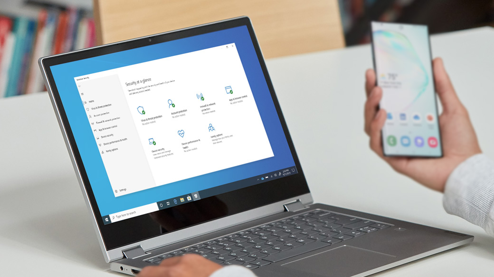
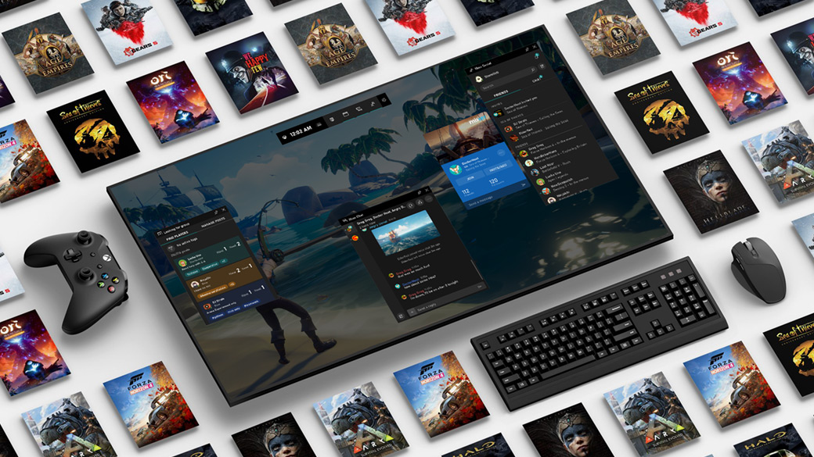

Desde compatibilidad con pantallas táctiles, hasta características que te ayudan a concentrarte y crear, Windows 10 cuenta con innovaciones que te ayudarán a hacer más

Seguridad integral incluida
Windows 10 viene con un conjunto completo de características antivirus, firewall, ransomware e Internet, todas integradas sin costo adicional para ti

La plataforma de juegos para PC más popular del planeta
Hay una razón por la que los profesionales de videojuegos juegan en Windows 10: cuenta con el poder y la innovación que necesitas para los juegos que hacen un consumo elevado de los gráficos
Microsoft Windows es un sistema operativo, es decir, un conjunto de programas que posibilita la administración de los recursos de una computadora. Este tipo de sistemas empieza a trabajar cuando se enciende el equipo para gestionar el hardware a partir desde los niveles más básicos.
Es importante tener en cuenta que los sistemas operativos funcionan tanto en las computadoras como en otros dispositivos electrónicos que usan microprocesadores (teléfonos móviles, reproductores de DVD, etc.). En el caso de Windows, su versión estándar funciona con computadoras, aunque también existe una versión para teléfonos (Windows Mobile).